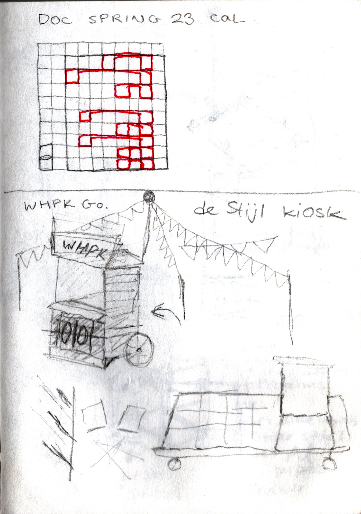
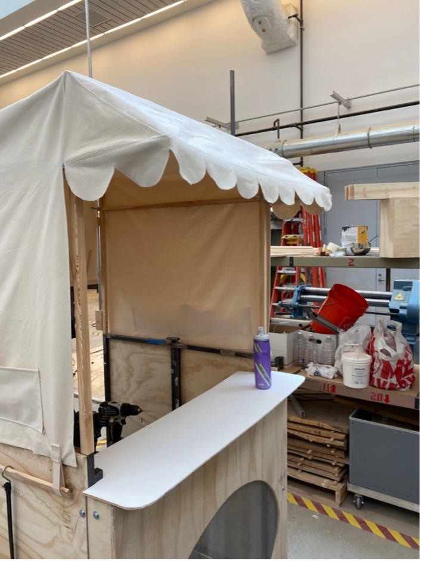
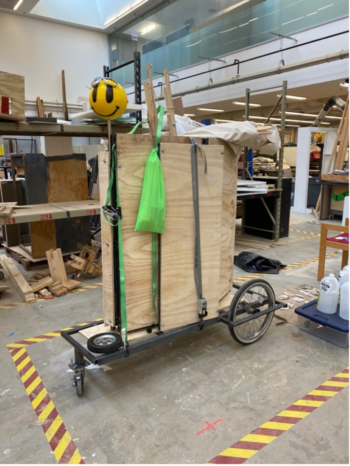
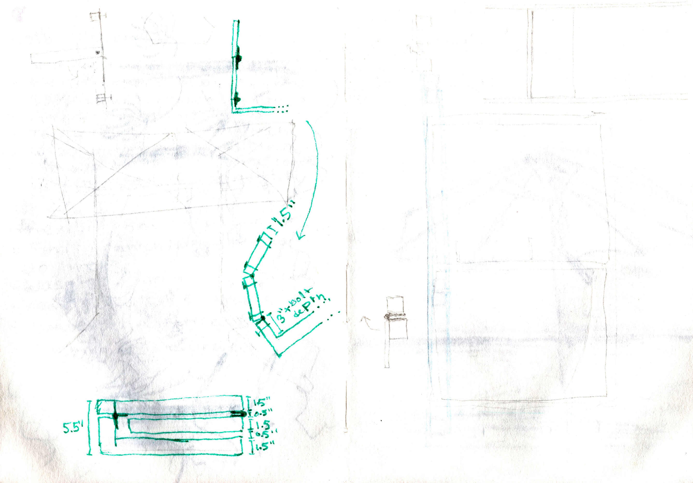

ELI HARRELL
WHPK 88.5FM portable radio booth
a hand ~ 3D project
This booth was commissioned by the campus radio station of the University of Chicago, which serves the adjacent neighborhoods of (W)oodlawn,
(H)yde (P)ark, and (K)enwood.
The booth is meant to bring the cozy plywood
interior of the station out to the world for live events. The steel frame makes it sturdy enough to have a party with.
whpk.org
click images to view them at full size.
| Completed, unfolded booth in its maiden deployment at the shop. |

|
| Initial sketches from the winter, jotted down over drinks and an excitement about de Stijl and Constructivist Screen-Platform-Kiosks |


|
|
Looking in inside from beneath the scalloped canopy. Delivering these frills was essential. |
 |
| A walkthrough of the booth's assembly mechanism. |

|
| The booth fully packed up and literally ready to roll. |  |
| While it was obvious that the booth had to be large enough to accomodate a standing person, only later did I consider that collapsibility would be equally important. These sketches show the start of thinking about how this might work for a plywood and steel construction of this size. |

 |
| Booth in use. |

|